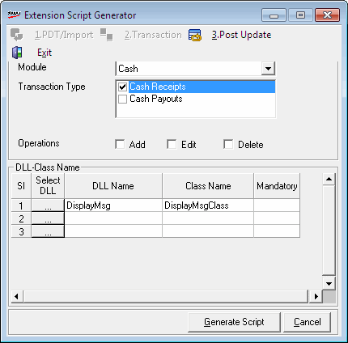

The template Post Update helps you to generate scripts for post-update extensions.
On selecting 3.Post Update tab, the relevant details captured are displayed.

Module: Select the module in which the extension is to be enabled. The modules where the selected type of extension is allowed are listed in the drop down.
Transaction Type: Select the transaction types in which the extension are to be enabled. The transactions that support post-update extensions for the selected module are listed.
Operations: Select the operations in which you want to implement the post-update extension. The operations available are Add, Edit and Delete. You can select one or more than operations at a time.
DLL-Class Name: This grid gives the details of DLLs used to enable the extension.
Select DLL: Click to select the required DLL
DLL Name: The name of the selected DLL is displayed
Class Name: The Class name of the selected DLL is displayed
Mandatory: Select, if the DLL is mandatory to enable the extension
Generate Script: To generate the script
Cancel: To cancel the selections made